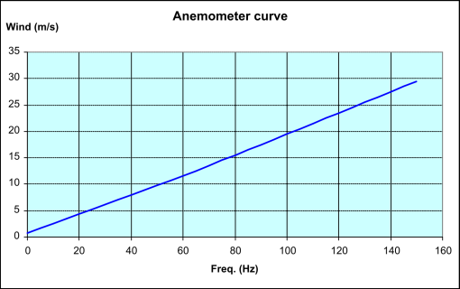

The next video presents the a typical anemometer with the type of signal it produces. The frequency of that signal has a close to linear relationship with the speed.

A typical Wind speed versus anemometer's frequency is shown in next figure.

The position of the anemometer can be seen in the Nacelle view.
There are other types of anemometers, such as those based on a hot wire (see technical details here ) as well as those based on sonar like techniques.